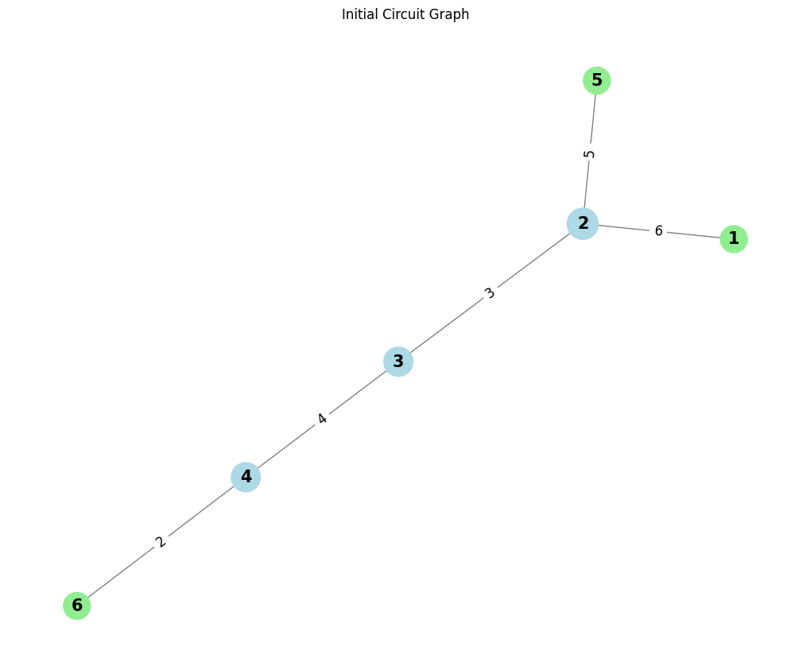

Problem 1
Equivalent Resistance Using Graph Theory
Motivation:
Challenge:
Calculating equivalent resistance in electrical circuits can be cumbersome, especially with complex resistor networks.
Graph Theory Approach:
Represent the circuit as a graph to simplify the process of calculating the equivalent resistance.
- Nodes represent junctions (connection points).
- Edges represent resistors, with weights corresponding to their resistance values.
Applications:
- Useful in circuit simulation software, optimization, and network design.
Purpose:
Demonstrates how graph theory can streamline calculations, especially for complicated networks.
Algorithm Description
Graph Representation:
- Nodes (vertices) represent junctions.
- Edges represent resistors, with weights equal to their resistance values.
Series and Parallel Combinations:
Series: Two resistors are in series if they are connected end-to-end with no intermediate junctions. Their combined resistance is the sum:
R_{\text{eq}} = R_1 + R_2
Parallel: Two resistors are in parallel if both are connected between the same two nodes. The combined resistance is:
\frac{1}{R_{\text{eq}}} = \frac{1}{R_1} + \frac{1}{R_2}
Graph Simplification:
- Series Reduction: Replace two resistors in series with their sum.
- Parallel Reduction: Replace two resistors in parallel with their equivalent resistance.
Iterative Process:
- Continuously reduce the graph by combining resistors in series or parallel until only one edge remains.
Handle Nested Combinations:
- After each reduction, new series and parallel combinations may emerge. The algorithm should re-check the graph after each reduction.
Pseudocode:
def equivalent_resistance(circuit_graph):
# Step 1: Initialize a graph G
G = circuit_graph
# Step 2: Detect series connections
def reduce_series():
for node in G:
if G[node] has exactly two neighbors:
# These two resistors are in series
# Sum the resistances and replace the edge
equivalent_resistance = sum_of_resistances
G[node] = equivalent_resistance # Update the edge
# Step 3: Detect parallel connections
def reduce_parallel():
for edge in G.edges:
u, v = edge
if G[u] and G[v] are connected with multiple resistors:
# These resistors are in parallel
# Calculate the equivalent resistance using the parallel formula
parallel_resistance = 1 / (1 / R1 + 1 / R2)
G[u][v] = parallel_resistance # Update the edge
# Step 4: Simplify graph
while len(G.edges) > 1:
reduce_series() # Reduce series connections
reduce_parallel() # Reduce parallel connections
# Step 5: Return the final equivalent resistance
return G[remaining_edge] # The final resistance is in the last remaining edge
## Explanation of the Algorithm:
### Graph Representation:
We use an adjacency list or matrix to represent the graph. The nodes (junctions) are connected by edges, which have resistance values as weights.
### Series Reduction:
We look for pairs of resistors connected in series by checking if two resistors are connected directly with no branching in between.
### Parallel Reduction:
We check for pairs of resistors connected in parallel by checking if they are both connected between the same pair of nodes.
### Iterative Process:
After each reduction, the graph is updated, and the algorithm rechecks the graph for possible new reductions. This process continues until we are left with a single equivalent resistance.
## Handling Complex Circuits:
The algorithm simplifies the circuit step-by-step. In complex circuits, you will need to detect combinations that might not be immediately obvious. This requires a combination of **depth-first search (DFS)** or **breadth-first search (BFS)** to explore and detect these patterns.
## Efficiency and Improvements:
### Time Complexity:
The complexity mainly depends on the size of the graph and the number of iterations needed to reduce the circuit. For each iteration, we are checking all edges, leading to a time complexity of \( O(E) \), where \( E \) is the number of edges.
### Optimization:
We can optimize the algorithm by maintaining auxiliary data structures to track the current state of the graph and avoid redundant calculations.
### Cycle Detection:
For more advanced circuits with cycles, we can use graph traversal techniques to detect and reduce these cycles effectively.
### Graph Representation:
#### Nodes:
- 1, 2, 3, 4, 5, 6
#### Edges:
- (1, 2, \( R_1 = 6 \, \Omega \))
- (2, 3, \( R_2 = 3 \, \Omega \))
- (3, 4, \( R_3 = 4 \, \Omega \))
- (2, 5, \( R_4 = 5 \, \Omega \))
- (4, 6, \( R_5 = 2 \, \Omega \))
import networkx as nx
import matplotlib.pyplot as plt
# Function to plot the graph for visualization
def plot_graph(G, title="Circuit Graph"):
pos = nx.spring_layout(G) # Layout for better visualization
plt.figure(figsize=(10, 8))
node_size = [500 + 100 * G.degree(node) for node in G.nodes]
node_color = ['lightgreen' if G.degree(node) == 1 else 'lightblue' for node in G.nodes]
nx.draw(G, pos, with_labels=True, node_color=node_color, node_size=node_size, font_size=15, font_weight="bold", edge_color="gray")
edge_labels = nx.get_edge_attributes(G, 'weight')
nx.draw_networkx_edge_labels(G, pos, edge_labels=edge_labels, font_size=12)
plt.title(title)
plt.axis('off') # Hide axes for a cleaner presentation
plt.show()
# Function to find series resistors
def find_series_resistors(G):
series_pairs = []
for node in G.nodes:
neighbors = list(G.neighbors(node))
if len(neighbors) == 2: # Exactly two neighbors for series connection
R1 = G[node][neighbors[0]]['weight']
R2 = G[node][neighbors[1]]['weight']
if R1 is not None and R2 is not None:
series_pairs.append((node, neighbors[0], neighbors[1])) # (center_node, neighbor1, neighbor2)
return series_pairs
# Function to find parallel resistors
def find_parallel_resistors(G):
parallel_pairs = []
for node in G.nodes:
neighbors = list(G.neighbors(node))
if len(neighbors) == 2: # Exactly two neighbors for parallel connection
R1 = G[node][neighbors[0]]['weight']
R2 = G[node][neighbors[1]]['weight']
if R1 is not None and R2 is not None:
parallel_pairs.append((neighbors[0], node, neighbors[1])) # (node1, center_node, node2)
return parallel_pairs
# Function to simplify a series resistor
def simplify_series(G, series_pair):
node1, node2, node3 = series_pair
R1 = G[node2][node1]['weight']
R2 = G[node3][node2]['weight']
R_eq = R1 + R2 # Series combination
# Remove the two resistors and add the equivalent one
G.remove_edge(node2, node1)
G.remove_edge(node3, node2)
G.add_edge(node1, node3, weight=R_eq)
return G
# Function to simplify a parallel resistor
def simplify_parallel(G, parallel_pair):
node1, node2, node3 = parallel_pair
R1 = G[node1][node2]['weight']
R2 = G[node2][node3]['weight']
R_eq = 1 / (1 / R1 + 1 / R2) # Parallel combination
# Remove the two resistors and add the equivalent one
G.remove_edge(node1, node2)
G.remove_edge(node2, node3)
G.add_edge(node1, node3, weight=R_eq)
return G
# Main function to calculate equivalent resistance
def calculate_equivalent_resistance(G):
# Initial graph plot
plot_graph(G, title="Initial Circuit Graph")
step = 1
# Keep simplifying the graph until only one edge remains
while len(G.edges) > 1:
# Simplify series connections
series_pairs = find_series_resistors(G)
if series_pairs:
print(f"Step {step}: Simplifying series pairs: {series_pairs}")
for series_pair in series_pairs:
G = simplify_series(G, series_pair)
# Plot after simplifying series resistors
plot_graph(G, title=f"After Step {step}: Simplified Series Resistors")
# Simplify parallel connections
parallel_pairs = find_parallel_resistors(G)
if parallel_pairs:
print(f"Step {step}: Simplifying parallel pairs: {parallel_pairs}")
for parallel_pair in parallel_pairs:
G = simplify_parallel(G, parallel_pair)
# Plot after simplifying parallel resistors
plot_graph(G, title=f"After Step {step}: Simplified Parallel Resistors")
step += 1
# The final equivalent resistance is the only edge left in the graph
final_resistance = None
for edge in G.edges(data=True):
final_resistance = edge[2]['weight']
return final_resistance
# Example usage: Create a circuit graph
G = nx.Graph()
# Adding resistors (edges) to the circuit
# Resistor values: R1 = 6 ohms, R2 = 3 ohms, R3 = 4 ohms, R4 = 5 ohms, R5 = 2 ohms
G.add_edge(1, 2, weight=6) # R1
G.add_edge(2, 3, weight=3) # R2
G.add_edge(3, 4, weight=4) # R3
G.add_edge(2, 5, weight=5) # R4
G.add_edge(4, 6, weight=2) # R5
# Call the function to calculate the equivalent resistance
equivalent_resistance = calculate_equivalent_resistance(G)
print(f"The equivalent resistance of the circuit is: {equivalent_resistance:.2f} ohms")
